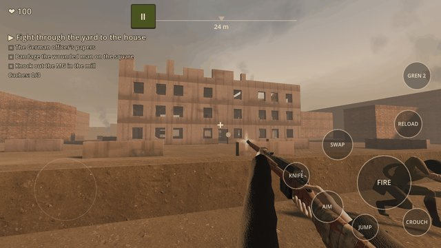

Road to Berlin: WW2 Shooter
Moscow, 1941. A trench near Mozhaysk, a Mosin rifle in your hands and four years of war ahead.
Road to Berlin is a first-person shooter about the Eastern Front of World War II. Lead your squad from the defence of Moscow to the flag over the Reichstag.

- Open maps: fields, villages, forests, a tractor factory, the ruins of Stalingrad. Storm the square or slip through the cellars with a knife.
- A living squad: your soldiers follow you through the campaign, cover you, guard prisoners and hold the line.
- Weapons of the era: the Mosin, PPSh, DP and TT, grenades, and captured MP 40, StG 44 and Panzerfaust.
- Arsenal and shop: trophies for missions, stars and hidden caches; upgrades and looks for your soldier.
- Stages of 3 to 5 minutes with checkpoints: stop any time and come back to the fight.
- A front report before every mission, with real dates and places.
- A shooting range, wave Defence, a daily mission and three difficulties from Recruit to Veteran.
- Mobile shooter controls with buttons you can move, and a "Blood: off" switch.
- Russian and English.
No Nazi symbols: only the history of the front. Forward to Berlin!